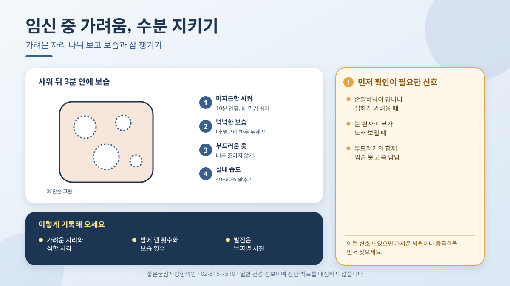

이종호 한의사 감수좋은꿈참사랑한의원 대표원장 (한의사 면허번호 19769)발행 2026-11-26 · 수정 2026-11-26
이 글의 차례
밤에 불을 끄고 누우면 배가 근질거리기 시작합니다. 긁으면 안 된다는 걸 알면서도 손이 먼저 갑니다. 아침에 거울을 보면 배 위에 손톱 자국이 길게 남아 있고, 튼살이 더 생길까 봐 마음이 무겁습니다.
임신 중 가려움은 생각보다 흔한 불편입니다. 그런데 아기와 직접 관련이 없어 보이다 보니 말씀을 미루시는 분이 많습니다. 연고 하나 바르는 것도 괜찮은지 몰라서, 그냥 참고 지내시다가 잠을 설치는 날이 늘어서야 진료실을 찾으십니다.
가려움은 잠을 깨우고, 잠이 부족하면 가려움을 더 크게 느끼게 됩니다. 이 고리가 이어지면 낮에도 예민해지고 지치기 쉽습니다. 그래서 가려움은 피부만의 문제가 아니라 임신 중 하루 전체의 컨디션과 이어져 있다고 생각합니다.
대부분의 임신 중 가려움은 피부가 늘어나고 건조해지면서 생기는 것으로, 보습과 생활 조정으로 한결 편해질 수 있습니다. 다만 몇 가지 모양은 산부인과 선생님과 꼭 상의해야 해서, 어떤 가려움인지 나눠 보는 일이 먼저입니다.
임신 중 가려움은 어떤 모습으로 오나요
가장 흔한 것은 배가 커지면서 배 위 피부가 당기고 건조해져 생기는 가려움입니다. 배꼽 주변과 옆구리, 튼살이 생기는 자리가 특히 근질거리고, 저녁과 밤에 더 심해지는 경우가 많습니다. 겉으로는 건조하고 하얗게 일어나는 정도로 보이기도 합니다.
가슴과 허벅지, 엉덩이처럼 살이 빠르게 늘어나는 자리도 가렵기 쉽습니다. 여기에 난방으로 실내가 건조해지는 겨울에는 정강이와 팔 바깥쪽까지 가려움이 번지기도 합니다.
임신 중기 이후에는 배의 튼살 자리를 따라 붉고 작은 오돌토돌한 발진이 올라오는 경우도 있습니다. 배꼽 주위는 비교적 깨끗한데 튼살을 따라 퍼지는 모양이라면 임신 중에 생기는 피부 발진 가운데 하나일 수 있어서, 산부인과나 피부과에서 확인을 받아 보시는 것이 좋습니다.
왜 임신 중에 피부가 가려워질까요
임신 중에는 배와 가슴, 허벅지 피부가 몇 달 사이에 빠르게 늘어납니다. 피부가 늘어나면 얇아지고 수분을 붙잡아 두는 힘도 약해집니다. 그래서 같은 환경에서도 쉽게 건조해지고 가렵게 느껴집니다.
호르몬 변화도 영향을 줍니다. 임신 중에는 몸에 열이 많아지고 땀이 늘어나는 분이 많은데, 땀이 마르면서 피부를 자극하기도 합니다. 가려움을 키우는 생활 요인을 꼽아 보면 이렇습니다.
- 뜨거운 물로 오래 샤워하거나 때를 미는 습관
- 난방을 세게 틀어 실내가 건조한 겨울밤
- 몸에 꼭 끼는 속옷이나 까슬한 소재의 옷
- 땀이 난 채로 오래 있는 일
- 잠이 부족하고 마음이 예민한 날
- 향이 강한 세정제나 섬유유연제
이 가운데 뜨거운 물 샤워와 건조한 실내는 겨울에 특히 영향을 많이 줍니다. 몸이 차다고 느껴 뜨거운 물을 오래 쓰시는 분이 많은데, 피부를 덮고 있는 기름막이 씻겨 나가면서 샤워 직후부터 오히려 더 가려워지기 쉽습니다.
가려움, 어떤 모양인지에 따라 다르게 봅니다
임신 중 가려움은 대부분 피부 건조에서 오지만, 모양에 따라 살피는 방향이 달라집니다. 아래처럼 나눠 보시면 도움이 됩니다.
- 배와 옆구리가 건조하고 하얗게 일어나며 가려운 경우: 피부 건조와 늘어남에서 오는 가려움일 가능성이 높습니다.
- 튼살 자리를 따라 붉은 발진이 오돌토돌 올라오는 경우: 임신 중 생기는 피부 발진일 수 있어 확인이 필요합니다.
- 발진은 거의 없는데 손바닥과 발바닥이 밤마다 심하게 가려운 경우: 산부인과 선생님께 말씀드려 혈액 검사 여부를 상의해 보셔야 합니다.
- 원래 있던 아토피나 습진이 임신 뒤 심해진 경우: 예전 경과와 쓰던 약을 함께 살펴야 합니다.
세 번째 모양은 특히 기억해 두세요. 임신 후기에 간에서 담즙이 흐르는 길이 영향을 받으면 손바닥과 발바닥이 유난히 가려울 수 있다고 알려져 있습니다. 피부는 멀쩡해 보이는데 가려움만 심하다면, 다음 검진을 기다리기보다 산부인과에 먼저 말씀드리는 편이 마음도 편합니다.
집에서 해 보는 간단한 점검
가려울 때 아래 질문에 스스로 답해 보세요. 진료실에서 여쭙는 내용과 거의 같습니다.
- 가장 가려운 자리는 어디인가요? 손바닥과 발바닥도 가려운가요?
- 하루 중 언제 가장 심한가요? 밤에 잠을 깨시나요?
- 눈에 보이는 발진이 있나요? 있다면 어디서 시작했나요?
- 샤워 직후, 땀이 난 뒤, 옷을 갈아입은 뒤 가운데 언제 심해지나요?
- 새로 바꾼 세정제나 로션, 섬유유연제가 있나요?
- 소변 색이 진해지거나 피부가 노래 보이지는 않나요?
발진 없이 건조하기만 하고 보습 뒤에 덜해진다면 대부분 생활 조정으로 지켜볼 수 있습니다. 발진이 번지거나, 손발바닥 가려움이 심하거나, 보습을 해도 잠을 못 잘 정도라면 진료를 받아 보시는 것이 좋습니다.
먼저 이렇게 여쭙니다
처음 오시면 저는 대략 이런 순서로 여쭙니다. 미리 생각해 오시면 이야기가 훨씬 수월해집니다.
- 지금 임신 몇 주이고, 산부인과에서 들은 주의 사항이 있나요?
- 가려움은 언제부터, 어디서 시작됐나요?
- 임신 전에도 아토피, 습진, 두드러기 같은 피부 불편이 있었나요?
- 지금 바르는 연고나 로션, 드시는 약과 영양제는 무엇인가요?
- 밤에 가려워서 깨는 날이 일주일에 며칠인가요?
- 최근 산부인과 혈액 검사에서 들은 이야기가 있나요?
임신 전 피부 이야기는 중요한 단서가 됩니다. 원래 피부가 건조했던 분인지, 아토피가 있었던 분인지에 따라 보습의 방법과 생활에서 조심할 부분이 달라지기 때문입니다.
일상에서 먼저 해 볼 수 있는 것
임신 중 가려움의 가장 기본은 피부의 수분을 지키는 것입니다. 거창한 제품보다 매일의 습관이 더 큰 차이를 만듭니다.
- 샤워는 미지근한 물로 10분 안팎에 마치기
- 때 밀기와 거친 수건 문지르기는 잠시 쉬기
- 샤워 뒤 3분 안에 물기가 살짝 남아 있을 때 보습제 바르기
- 배와 옆구리, 허벅지는 하루 두세 번 보습제를 넉넉히 덧바르기
- 면처럼 부드럽고 통기가 잘 되는 옷, 배를 조이지 않는 속옷 입기
- 실내 습도를 40~60% 정도로 맞추고, 밤에는 난방을 조금 낮추기
보습제는 향이 강하지 않고 성분이 단순한 것을 고르시는 편이 무난합니다. 새 제품을 쓰실 때는 팔 안쪽에 조금 발라 하루 정도 지켜본 뒤 넓게 바르시면 좋습니다. 임신 중 바르는 연고나 약용 크림은 산부인과나 피부과에서 상의한 뒤 쓰시길 권합니다.
긁고 싶을 때는 손톱 대신 손바닥으로 지그시 누르거나, 시원한 물수건을 잠시 대 보세요. 긁으면 잠깐 시원하지만 피부가 상하면서 가려움이 더 오래가는 경우가 많습니다. 손톱은 짧고 둥글게 다듬어 두시고, 밤에는 얇은 면장갑을 끼고 주무시는 분도 계십니다.
세탁도 살펴볼 만합니다. 향이 강한 섬유유연제는 잠시 쉬어 보시고, 세제는 헹굼을 한 번 더 하시면 옷에 남는 자극이 줄어듭니다. 새 옷은 한 번 빨아서 입으시길 권합니다.
밤 가려움을 줄이는 잠자리 요령
가려움은 대부분 밤에 심해집니다. 몸이 따뜻해지고, 낮 동안 신경 쓸 일이 사라지면서 가려움이 더 크게 느껴지기 때문입니다. 잠자리를 조금만 바꿔도 밤이 한결 편해질 수 있습니다.
이불은 너무 두껍지 않게, 잠옷은 땀을 잘 흡수하는 면 소재로 고르세요. 전기장판을 쓰신다면 온도를 낮추거나 잠들기 전에 꺼 두시는 것이 좋습니다. 잠들기 30분 전에 배와 가려운 자리에 보습제를 한 번 더 발라 두는 습관도 도움이 됩니다.
가려워서 깼다면 억지로 참으며 누워 있기보다, 잠시 일어나 시원한 물수건을 대고 물 한 모금을 마신 뒤 다시 누워 보세요. 긁는 손을 멈추는 짧은 쉼이 다시 잠드는 데 도움이 되는 경우가 많습니다.
계절에 따라 달라지는 임신 중 가려움
겨울에는 실내 난방으로 공기가 바싹 마르고, 따뜻한 물로 오래 씻는 날이 늘어 건조 가려움이 가장 흔합니다. 이 시기에는 가습기나 젖은 빨래를 방에 널어 습도를 지키고, 보습 횟수를 평소보다 한 번 더 늘려 보세요.
여름에는 땀과 열이 가려움을 부릅니다. 배와 가슴 아래, 허벅지 안쪽처럼 살이 맞닿는 자리에 땀이 고이면서 빨갛게 짓무르고 가렵기 쉽습니다. 땀을 흘린 뒤에는 미지근한 물로 가볍게 헹구고, 물기를 꼼꼼히 말린 뒤 가벼운 보습제를 얇게 펴 발라 주세요.
환절기에는 아침저녁 기온 차이로 피부가 예민해집니다. 갑자기 두꺼운 옷을 꺼내 입으며 까슬한 소재가 피부에 닿는 일도 많습니다. 철이 바뀔 때는 맨살에 닿는 옷부터 부드러운 것으로 챙겨 두시면 좋습니다.
어느 계절이든 물을 충분히 드시는 것도 기본입니다. 피부 겉만 챙기기보다 몸 안의 수분도 함께 챙겨 주세요. 물병을 손이 닿는 곳에 두고 자주 조금씩 드시면 됩니다.
튼살과 가려움은 같은 것인가요
튼살은 피부가 빠르게 늘어나면서 피부 안쪽 조직이 갈라져 생기는 줄무늬입니다. 처음에는 붉거나 보랏빛을 띠다가 시간이 지나면 하얗게 옅어지는 경우가 많습니다. 튼살이 생기는 시기에 그 자리가 가렵게 느껴지는 분이 많습니다.
튼살이 생기는 정도는 피부 타고난 성질과 체중이 느는 속도에 따라 사람마다 다릅니다. 보습이 튼살을 막아 준다고 단정하기는 어렵지만, 피부를 부드럽게 유지하면 당김과 가려움을 덜 느끼는 데 도움이 될 수 있습니다. 무엇보다 긁어서 상처를 만들지 않는 것이 중요합니다.
한의원에서 함께 살필 수 있는 경우
임신 중이라도 산부인과와 상의한 뒤 한의원 진료를 함께 받으실 수 있습니다. 이런 분이라면 상담해 보세요.
- 밤마다 가려움 때문에 잠을 자주 깨는 경우
- 열이 오르고 땀이 많으면서 가려움이 함께 심해지는 경우
- 임신 뒤 원래 있던 아토피나 습진이 다시 올라온 경우
- 가려움과 함께 변비, 소화 불편, 예민함이 이어지는 경우
- 보습을 꾸준히 해도 건조함이 잘 가라앉지 않는 경우
좋은꿈참사랑한의원에서는 맥을 짚고 가려운 자리의 피부를 함께 살핍니다. 열이 위로 오르는 느낌이 있는지, 땀과 잠, 대소변은 어떤지 여쭙고, 가려움이 심해지는 시간대와 생활의 연결을 함께 찾습니다.
진찰한 내용을 바탕으로 지금 상태에 맞는 방법을 정합니다. 생활 조정과 보습 방법을 먼저 함께 정리하고, 침은 임신 중 피하는 자리를 가려 조심스럽게 씁니다. 한약은 임신 중임을 먼저 알려 주시고 산부인과 선생님과 상의한 뒤 신중하게 정합니다.
발진이 번지거나 손발바닥 가려움이 심하다면 산부인과와 피부과 진료를 먼저 받으시도록 안내합니다. 쓰고 계신 연고나 약이 있다면 혼자 멈추지 마시고, 처방한 선생님과 상의해 주세요.
이렇게 기록해 오시면 상담이 쉬워집니다
가려움은 순간순간의 느낌이라 기억으로는 흐름이 잘 보이지 않습니다. 1~2주 정도만 짧게 적어 보세요.
- 가려운 자리와 가장 심했던 시각
- 밤에 가려워서 깬 횟수
- 그날 샤워 시간과 물 온도, 보습제 바른 횟수
- 실내 난방과 습도, 땀을 많이 흘린 일
- 새로 쓴 제품이나 먹은 음식
- 발진이 있다면 날짜별 사진
발진은 사진으로 남겨 두시면 특히 좋습니다. 진료하는 날에는 이미 가라앉아 있는 경우가 많아서, 가장 심했던 순간의 사진이 큰 도움이 됩니다. 같은 자리를 같은 거리에서 찍어 두시면 비교하기 쉽습니다.
가려움을 참는 밤이 줄어들도록
임신 중 가려움은 아기와 상관없는 작은 불편처럼 보이지만, 밤잠을 흔들고 하루의 기분을 바꿔 놓습니다. 작은 불편이라고 넘기지 마시고 편하게 말씀해 주세요.
오늘 밤에는 샤워 물을 조금 미지근하게 하고, 샤워 뒤 3분 안에 보습제를 바르는 것부터 시작해 보세요. 다음에 오시면 기록과 사진을 함께 보며 어디서부터 손을 댈지 정해 보겠습니다.
이런 증상은 먼저 확인이 필요합니다
- 손바닥과 발바닥이 밤마다 심하게 가렵고, 눈 흰자나 피부가 노래지거나 소변 색이 진해지는 경우
- 갑자기 온몸에 두드러기가 번지면서 입술이나 눈이 붓고 숨쉬기가 답답한 경우
이런 신호가 있으면 한의원보다 가까운 병원이나 응급실을 먼저 찾으세요.
함께 읽으면 좋은 글
- 임신 중이거나 임신 가능성이 있을 때는 한의원에 무엇을 알려야 하나요?
- 가려움이 낮에 심한지 밤에 심한지는 왜 묻고, 어떻게 적어 두나요?
- 보일러를 세게 틀고 자면 등과 종아리가 가려운 것은 어떻게 살피나요?
- 저녁만 되면 두드러기가 올라왔다 사라지기를 반복할 때는 어떻게 살피나요?
- 임신 중 밤에 잠이 오지 않거나 자주 깰 때는 무엇을 살피고 어떻게 지내나요?

여쭙는 것
- 지금 임신 몇 주이고, 산부인과에서 들은 주의 사항이 있나요?
- 가려움은 언제부터, 어디서 시작됐나요?
- 임신 전에도 아토피, 습진, 두드러기 같은 피부 불편이 있었나요?
생활에서 해 볼 것
- 샤워는 미지근한 물로 10분 안팎에 마치기
- 때 밀기와 거친 수건 문지르기는 잠시 쉬기
- 샤워 뒤 3분 안에 물기가 살짝 남아 있을 때 보습제 바르기
한의원에서 함께 살필 것
- 밤마다 가려움 때문에 잠을 자주 깨는 경우
- 열이 오르고 땀이 많으면서 가려움이 함께 심해지는 경우
- 임신 뒤 원래 있던 아토피나 습진이 다시 올라온 경우
먼저 확인이 필요한 신호
- 손바닥과 발바닥이 밤마다 심하게 가렵고, 눈 흰자나 피부가 노래지거나 소변 색이 진…
- 갑자기 온몸에 두드러기가 번지면서 입술이나 눈이 붓고 숨쉬기가 답답한 경우
한눈에 보는 표
| 구분 | 핵심 |
|---|---|
| 여쭙는 것 | 지금 임신 몇 주이고, 산부인과에서 들은 주의 사항이 있나요? 가려움은 언제부터, 어디서 시작됐나요? |
| 생활에서 해 볼 것 | 샤워는 미지근한 물로 10분 안팎에 마치기 때 밀기와 거친 수건 문지르기는 잠시 쉬기 |
| 한의원에서 함께 살필 것 | 밤마다 가려움 때문에 잠을 자주 깨는 경우 열이 오르고 땀이 많으면서 가려움이 함께 심해지는 경우 |
| 먼저 확인이 필요한 신호 | 손바닥과 발바닥이 밤마다 심하게 가렵고, 눈 흰자나 피부가 노래지거나 소변 색이 진해지는 경우 갑자기 온몸에 두드러기가 번지면서 입술이나 눈이 붓고 숨쉬기가 답답한 경우 |
자주 묻는 질문
임신 중에 가려움 연고를 발라도 되나요?
연고의 종류에 따라 다르기 때문에 산부인과나 피부과에서 상의한 뒤 쓰시길 권합니다. 보습제는 향이 강하지 않고 성분이 단순한 것을 골라 꾸준히 바르시면 됩니다.
손바닥과 발바닥만 유난히 가려운데 괜찮을까요?
발진 없이 손발바닥이 밤마다 심하게 가렵다면 산부인과 선생님께 말씀드려 혈액 검사가 필요한지 상의해 보세요. 다음 검진을 기다리기보다 먼저 연락해 보시는 편이 좋습니다.
보습제를 바르면 튼살이 생기지 않나요?
보습이 튼살을 막아 준다고 단정하기는 어렵습니다. 다만 피부를 부드럽게 유지하면 당김과 가려움을 덜 느끼는 데 도움이 될 수 있고, 긁어서 상처가 생기는 일도 줄일 수 있습니다.
임신 중 가려움에 한약을 먹어도 되나요?
임신 중이라는 사실을 먼저 알려 주시고, 산부인과 선생님과 상의한 뒤 지금 상태에 맞는지 신중하게 정합니다. 바르는 약과 드시는 영양제도 함께 확인합니다.
출산하면 가려움이 없어지나요?
피부가 늘어나며 생긴 가려움은 출산 뒤 서서히 가라앉는 경우가 많습니다. 다만 원래 아토피가 있던 분은 출산 뒤 피로와 잠 부족으로 다시 올라오기도 해서 보습을 이어 가시는 것이 좋습니다.
좋은꿈참사랑한의원은 재진 때 지난번 이야기부터 이어서 여쭙니다. 진료시간과 예약은 오시는 길에서 확인하세요.
어디서 상담받을 수 있나요?
좋은꿈참사랑한의원은 서울 동작구 만양로2길 2 신성빌딩 3층·5층(서울 동작구 상도동, 7호선 상도역 3번 출구 근처)에 있습니다. 한의사 3명(이종호 대표원장, 조영기 수석진료원장, 정원영 진료원장)이 진료합니다. 진료시간은 평일 09:30~20:00(점심 13:00~14:00), 토·일·공휴일 09:30~15:00이며, 방문 전 전화로 확인을 권합니다. 예약은 네이버 예약, 카카오톡 상담, 전화 02-815-7510로 받습니다.
이 글은 일반적인 건강 정보이며 개인의 진단이나 치료를 대신하지 않습니다. 증상이 있거나 복용 중인 약이 있다면 진료를 통해 확인하세요. 치료 효과는 개인마다 다를 수 있습니다.
작성 기준: 일반적으로 알려져 있는 건강 정보를 참고해 정리했습니다(대표원장 감수). 증상 기록은 1~2주 동안 하루 1회, 비슷한 시간에 적어 오시면 지난 상태와 비교하기 쉽습니다.